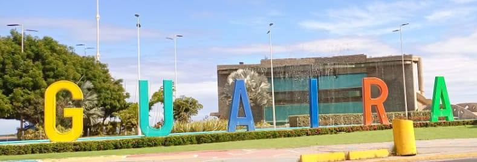
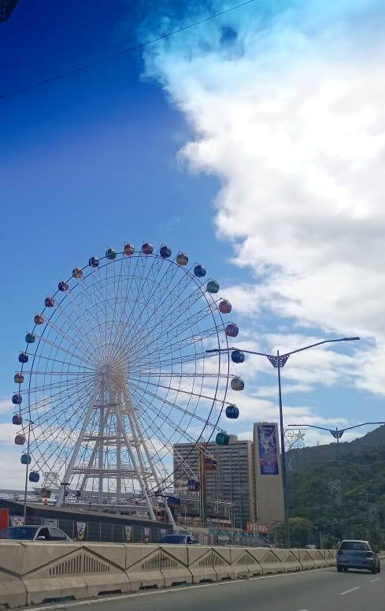
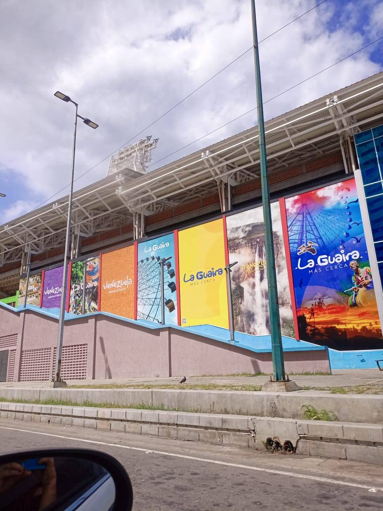
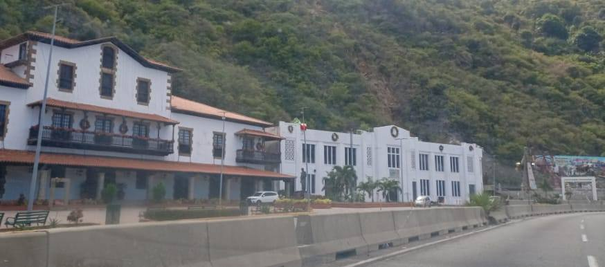
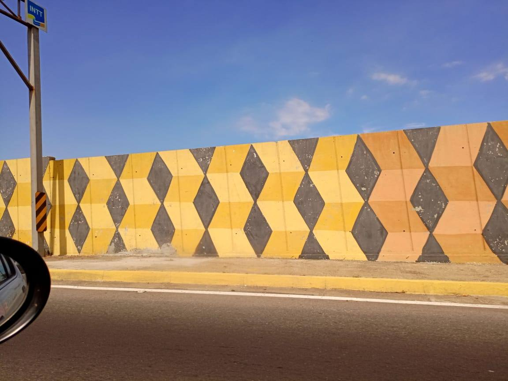
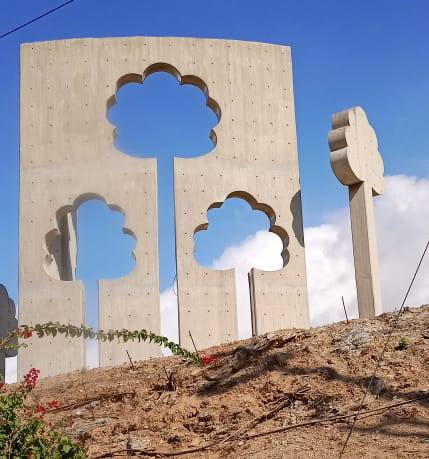
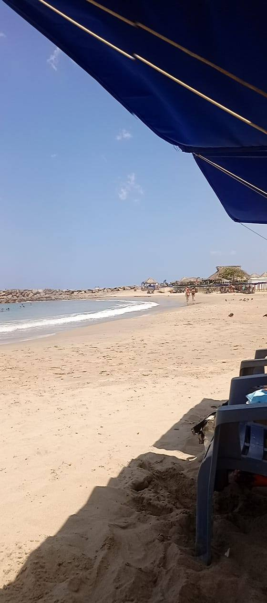
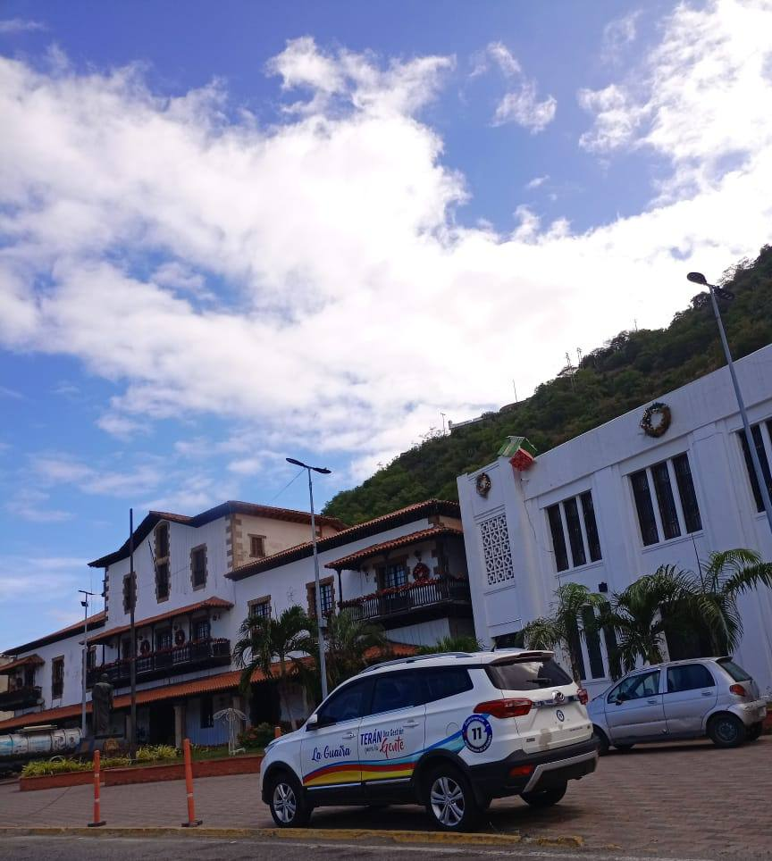

Propuestas ciudadanas para reconstruir con inteligencia, belleza y futuro. Cada idea aquí nació de quienes conocen este litoral mejor que nadie.








Imágenes del litoral · Fotografías propias
Explora las propuestas
Bomberos, voluntarios y equipos internacionales que trabajaron sin descanso cuando más se necesitaba. Sus nombres no se olvidan.
Leer → 02 · EbookDatos, récords y tecnologías de construcción mundial. Lo que Venezuela y La Guaira pueden aplicar hoy.
Leer → 03 · EdificiosLista completa de estructuras construidas en tiempo récord en todo el mundo. La velocidad como herramienta.
Ver lista → 04 · Ciudad ModeloUna ciudad futurista entre Caracas y Maracay. Conectada, moderna, con trabajo y riqueza que se queda adentro.
Leer propuesta → 05 · Encuestas¿Qué proyecto es más urgente? ¿Qué energía prefieres? ¿Qué espacio público necesitas? Vota y el resultado llega al buzón.
Participar → 06 · ProyectosVivienda sismo-resistente, energía solar, agua potable, escuelas modulares. Cada proyecto con cifras y plazos concretos.
Ver proyectos →El litoral que fue · La Guaira histórica
Esta página nació de la convicción de que cada ciudadano tiene algo que aportar. No somos ingenieros ni arquitectos — somos personas que creen que las ideas importan.
El 24 de junio de 2026 La Guaira vivió una de las tragedias más grandes de su historia. En cuestión de minutos, edificios que habían sido hogares durante décadas se convirtieron en escombros. El litoral central venezolano quedó marcado para siempre.
Pero en medio de ese dolor, algo extraordinario ocurrió. Ciudadanos de todas partes respondieron. Rescatistas llegaron desde El Salvador, México, Estados Unidos, Italia, Brasil, Venezuela y otros países que también respondieron al llamado solidario. Voluntarios sin entrenamiento cavaron con sus manos. Las ONG supieron exactamente qué hacer cuando más se necesitaba.
Esta página no nació para documentar el dolor. Nació para mirar hacia adelante. Para preguntarle a la gente qué quiere que sea La Guaira. Para recoger ideas, propuestas y sueños de quienes conocen ese litoral mejor que nadie: sus propios habitantes.
Aquí encontrarás encuestas, proyectos, zonas de reconstrucción, ideas ciudadanas y ejemplos de ciudades del mundo que transformaron sus tragedias en oportunidades. Todo lo que se publique aquí viene de la comunidad y vuelve a ella.